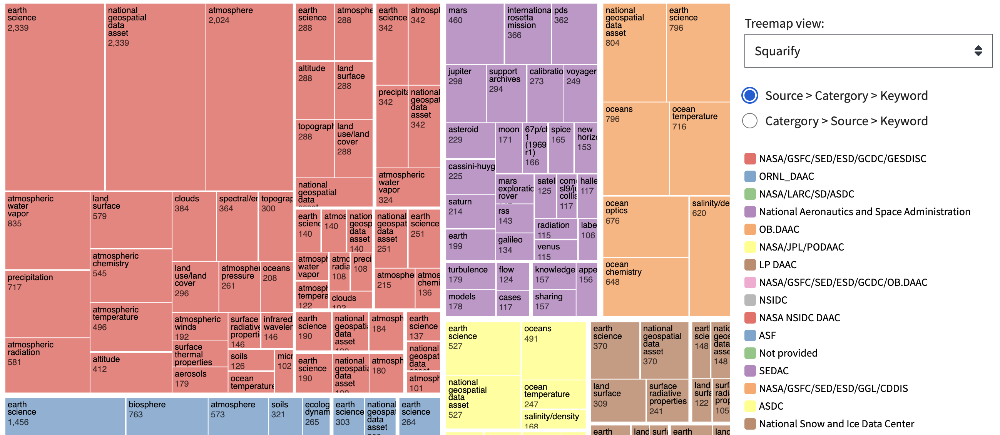

Want NASA data?
Check out our data catalog below or you can read about other open-government websites further down the page.
Know what you are looking for?
Search for it in our catalog of tens of thousand datasets released to the public!
DATA.NASA.GOV: A catalog of publicly available NASA datasets
DATA.NASA.GOV is NASA's clearinghouse site for open-data provided to the public.
Tens of thousands of datasets are available for you.
The majority of dataset pages on data.nasa.gov only hold metadata for each dataset. It is common for the actual data to be held on other NASA archive sites. Data.nasa.gov will have the metadata and links to the data as it exists in those many other locations.
Some datasets on data.nasa.gov are harvested from other NASA data archives and other datasets only exist on data.nasa.gov. This slideshow created for SpaceApps Hackathon participants explains the wider NASA data universe and has some suggestions for finding NASA data.
Do You Want to Upload New NASA Datasets?
If you are a NASA individual and would like to upload new datasets, either manually via a webform or programmatically via API, please check out these instructions. Note: You'll need to be behind the NASA firewall to access that link. If you sign-up without following those instructions, you won't be able to add new datasets.
What type of data is available on Data.nasa.gov?
There are thousands of public datasets on data.nasa.gov.
To give the public a better understanding of the different types of datasets available, a data visualization page has been created entirely dedicated to helping our users gain a better understanding as to what kind of data they can expect to find.
 Take me to the visualization pageOpen Dataset Resourses Tied to Data.nasa.gov
NASA datasets are available through a number of different websites, not just data.nasa.gov.
Open-Innovation Program
Data.nasa.gov is the dataset-focused site of NASA's OCIO (Office of the Chief Information Officer) open-innovation program. There are also API.nasa.gov and Code.nasa.gov for APIs and Code respectively.
Open Innovation Sites
code.nasa.gov
A page that contains information on links to all open-sourced NASA code projects.
api.nasa.gov
A clearinghouse site for information about NASA APIs. Acts a passthrough site to NASA APIs elsewhere. Request a key and get to work!
data.nasa.gov (this site)
NASA's central open-data site for the public. Aggregates data from different archives and datasets not available anywhere else.
Other NASA Data Sites and Science Archives
Additionally, NASA has a number of data archives, often geared around providing the public with datasets from a particular domain, field of science, or mission.
nasa.gov/open/data has a good overview of all the various science and mission data sites.
A few key links:
- Planetary Data System (PDS)
- Earth Observing System Data and Information System (EOSDIS)
- List of Other NASA Science & Mission Data Archives
NASA Tecnical Reports Server
You might also be interested in NASA technical reports, publications, or presentations. These are found on NASA Technical Reports Server or NRTS, which is run by NASA's STI (Science & Technical Information) Program.
A few key links:
Code and data from all US federal agencies
Code.gov and data.gov are aggregator sites run by GSA (General Services Administration) that collect open-data and open-code from across all U.S. federal government agencies. Code.nasa.gov and data.nasa.gov feed into code.gov and data.gov respectively. Data.gov has an APIs for working with their datasets that make them worth checking out even if you're strickly interested in NASA data.